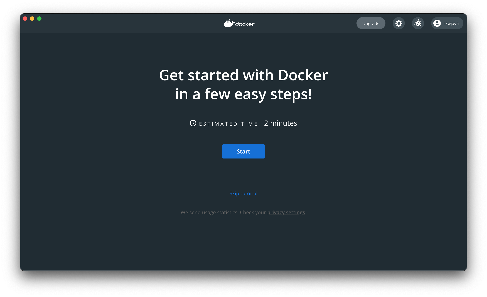

クラウドコンピューティングとビッグデータ入門 | オリジナル、AI翻訳
このレッスンでは以下のトピックを取り上げます：
- Spark
- Hadoop
- Kubernetes
- Docker
- Flink
- MongoDB
（注：これらの項目は技術名であり、翻訳の必要はありません。）
クラウドコンピューティングについて語るとき、多くのツールが欠かせません。Hadoop、Hive、Hbase、ZooKeeper、Docker、Kubernetes、Spark、Kafka、MongoDB、Flink、Druid、Presto、Kylin、Elastic Searchなど、聞いたことがありますか？これらのツールのいくつかは、ビッグデータエンジニアや分散バックエンドエンジニアの職務記述書から見つけたものです。これらは高給のポジションです。私たちはそれらをすべてインストールして、少し触れてみることにしましょう。
Spark初探
公式サイトによると、Sparkは大規模データの分析エンジンとして使用されます。sparkは一連のライブラリです。Redisのようにサーバーとクライアントに分かれているわけではなく、sparkはクライアント側でのみ使用されます。公式サイトから最新バージョン、spark-3.1.1-bin-hadoop3.2.tarをダウンロードしました。
$ tree . -L 1
.
├── LICENSE
├── NOTICE
├── R
├── README.md
├── RELEASE
├── bin
├── conf
├── data
├── examples
├── jars
├── kubernetes
├── licenses
├── python
├── sbin
└── yarn
11ディレクトリ、4ファイル
どうやら、各言語で書かれたいくつかの解析ライブラリのようです。
また、公式サイトによると、Python上で直接依存ライブラリをインストールできるとのことです。`pip install pyspark`
```shell
$ pip install pyspark
pysparkを収集中
pyspark-3.1.1.tar.gz (212.3 MB) をダウンロード中
|████████████████████████████████| 212.3 MB 14 kB/s
py4j==0.10.9 を収集中
py4j-0.10.9-py2.py3-none-any.whl (198 kB) をダウンロード中
|████████████████████████████████| 198 kB 145 kB/s
収集したパッケージのためのホイールを構築中: pyspark
pysparkのためのホイールを構築中 (setup.py) ... 完了
pysparkのためのホイールを作成しました: ファイル名=pyspark-3.1.1-py2.py3-none-any.whl サイズ=212767604 sha256=0b8079e82f3a5bcadad99179902d8c8ff9f8eccad928a469c11b97abdc960b72
ディレクトリに保存: /Users/lzw/Library/Caches/pip/wheels/23/bf/e9/9f3500437422e2ab82246f25a51ee480a44d4efc6c27e50d33
pysparkのビルドに成功しました
収集したパッケージをインストール中: py4j, pyspark
py4j-0.10.9 と pyspark-3.1.1 のインストールに成功しました
インストールしました。
これは公式サイトを見て、いくつかの例を確認しています。
./bin/run-example SparkPi 10
あ、なるほど、ダウンロードしたインストーラーパッケージ内のプログラムを実行できるんですね。でもエラーが出ました。
$ ./bin/run-example SparkPi 10
21/03/11 00:06:15 WARN NativeCodeLoader: プラットフォーム用のネイティブHadoopライブラリをロードできません... 適用可能な場所では組み込みのJavaクラスを使用します
21/03/11 00:06:16 INFO ResourceUtils: spark.driver用のカスタムリソースは設定されていません。
21/03/11 00:06:16 WARN Utils: サービス 'sparkDriver' がランダムな空きポートにバインドできませんでした。適切なバインドアドレスを設定しているか確認してください。
Sparkは、Hadoopデータと互換性のある高速で汎用的な処理エンジンです。YARNまたはSparkのスタンドアロンモードを介してHadoopクラスターで実行でき、HDFS、HBase、Cassandra、Hive、および任意のHadoop InputFormatのデータを処理できます。バッチ処理（MapReduceに類似）と、ストリーミング、インタラクティブクエリ、機械学習などの新しいワークロードの両方を実行するように設計されています。
hadoopが何度も登場しました。spark depends hadoopをGoogleで検索したところ、以下のような記述が見つかりました。どうやらこれはHadoop形式のデータに依存しているようです。まずはHadoopについて調べてみましょう。
Hadoop
簡単に公式サイトを見た後、インストールしてみましょう。
brew install hadoop
インストールの過程で、少し理解を深めましょう。
Apache Hadoopソフトウェアライブラリは、シンプルなプログラミングモデルを使用して、コンピュータのクラスター全体で大規模なデータセットを分散処理するためのフレームワークです。単一のサーバーから数千台のマシンにスケールアップするように設計されており、各マシンがローカルでの計算とストレージを提供します。ハードウェアに依存して高可用性を実現するのではなく、ライブラリ自体がアプリケーション層で障害を検出し、処理するように設計されているため、それぞれが障害を起こしやすいコンピュータのクラスター上で高可用性サービスを提供します。
つまり、Hadoopは分散データセットを処理するためのフレームワークです。これらのデータセットは多くのコンピュータに分散している可能性があります。非常にシンプルなプログラミングモデルを使用して処理します。Hadoopは、単一のサーバーから数千台のマシンに拡張できるように設計されています。ハードウェアの高可用性に依存するのではなく、このライブラリはアプリケーションレベルでエラーを検出し、処理するように設計されています。そのため、クラスタ内の各コンピュータが故障する可能性があるにもかかわらず、高可用性のサービスをクラスタに展開することができます。
$ brew install hadoop
エラー:
homebrew-core はシャロー（浅い）クローンです。
homebrew-cask はシャロー（浅い）クローンです。
`brew update` を実行する前に、まず以下を実行してください:
git -C /usr/local/Homebrew/Library/Taps/homebrew/homebrew-core fetch --unshallow
git -C /usr/local/Homebrew/Library/Taps/homebrew/homebrew-cask fetch --unshallow
これらのコマンドは、リポジトリのサイズが大きいため、実行に数分かかる場合があります。
この制限は、GitHubの要請により設けられました。シャロークローンの更新は、
Homebrew/homebrew-core と Homebrew/homebrew-cask のツリーレイアウトとトラフィックのため、
非常に高コストな操作です。これを自動的に行わないのは、CIシステムで繰り返し高コストな
アンシャロー操作を実行しないようにするためです（CIシステムはシャロークローンを使用しないように修正されるべきです）。
ご不便をおかけして申し訳ありません。
==> Downloading https://homebrew.bintray.com/bottles/openjdk-15.0.1.big_sur.bottle.tar.gz
すでにダウンロード済み: /Users/lzw/Library/Caches/Homebrew/downloads/d1e3ece4af1d225bc2607eaa4ce85a873d2c6d43757ae4415d195751bc431962--openjdk-15.0.1.big_sur.bottle.tar.gz
==> Downloading https://www.apache.org/dyn/closer.lua?path=hadoop/common/hadoop-3.3.0/hadoop-3.3.0.tar.gz
すでにダウンロード済み: /Users/lzw/Library/Caches/Homebrew/downloads/764c6a0ea7352bb8bb505989feee1b36dc628c2dcd6b93fef1ca829d191b4e1e--hadoop-3.3.0.tar.gz
==> hadoop の依存関係をインストール中: openjdk
==> hadoop の依存関係をインストール中: openjdk
==> openjdk-15.0.1.big_sur.bottle.tar.gz を展開中
==> 注意
システムのJavaラッパーがこのJDKを見つけるためには、以下のようにシンボリックリンクを作成してください:
sudo ln -sfn /usr/local/opt/openjdk/libexec/openjdk.jdk /Library/Java/JavaVirtualMachines/openjdk.jdk
openjdk は keg-only です。これは、/usr/local にシンボリックリンクが作成されていないことを意味します。なぜなら、macOS の java ラッパーと競合するためです。
もしPATHにopenjdkを最初に配置する必要がある場合は、次のコマンドを実行してください:
echo 'export PATH="/usr/local/opt/openjdk/bin:$PATH"' >> /Users/lzw/.bash_profile
コンパイラがopenjdkを見つけるためには、以下の設定が必要かもしれません：
export CPPFLAGS="-I/usr/local/opt/openjdk/include"
==> 概要
🍺 /usr/local/Cellar/openjdk/15.0.1: 614ファイル, 324.9MB
==> Hadoopをインストール中
🍺 /usr/local/Cellar/hadoop/3.3.0: 21,819ファイル, 954.7MB, 2分15秒でビルド完了
==> 依存関係のアップグレード 1つ:
maven 3.3.3 -> 3.6.3_1
==> maven 3.3.3 -> 3.6.3_1 にアップグレード中
==> https://www.apache.org/dyn/closer.lua?path=maven/maven-3/3.6.3/binaries/apache-maven-3.6.3-bin.tar.gz をダウンロード中
==> https://mirror.olnevhost.net/pub/apache/maven/maven-3/3.6.3/binaries/apache-maven-3.6.3-bin.tar.gz からダウンロード中
######################################################################## 100.0%
エラー: brew link ステップが正常に完了しませんでした
フォーミュラはビルドされましたが、/usr/local にシンボリックリンクされていません
bin/mvn をシンボリックリンクできませんでした
ターゲット /usr/local/bin/mvn
は maven に属するシンボリックリンクです。以下のコマンドでリンクを解除できます:
brew unlink maven
リンクを強制し、すべての競合するファイルを上書きするには: brew link –overwrite maven
削除されるすべてのファイルをリストアップするには: brew link –overwrite –dry-run maven
競合する可能性のあるファイルは以下の通りです: /usr/local/bin/mvn -> /usr/local/Cellar/maven/3.3.3/bin/mvn /usr/local/bin/mvnDebug -> /usr/local/Cellar/maven/3.3.3/bin/mvnDebug /usr/local/bin/mvnyjp -> /usr/local/Cellar/maven/3.3.3/bin/mvnyjp ==> 概要 🍺 /usr/local/Cellar/maven/3.6.3_1: 87ファイル, 10.7MB, 7秒でビルド 削除中: /usr/local/Cellar/maven/3.3.3… (92ファイル, 9MB) ==> アップグレードされたフォーミュラの依存関係をチェック中… ==> 壊れた依存関係は見つかりませんでした! ==> 注意事項 ==> openjdk システムのJavaラッパーがこのJDKを見つけるためには、以下のようにシンボリックリンクを作成してください: sudo ln -sfn /usr/local/opt/openjdk/libexec/openjdk.jdk /Library/Java/JavaVirtualMachines/openjdk.jdk
openjdkはkeg-onlyであり、これは/usr/localにシンボリックリンクされていないことを意味します。なぜなら、macOSのjavaラッパーをシャドウしてしまうからです。
もし openjdk を PATH の最初に置く必要がある場合は、次のコマンドを実行してください:
echo 'export PATH="/usr/local/opt/openjdk/bin:$PATH"' >> /Users/lzw/.bash_profile
コンパイラがopenjdkを見つけるためには、以下の設定が必要かもしれません: export CPPFLAGS=”-I/usr/local/opt/openjdk/include”
`brew`の出力ログに`maven`が適切にリンクされていないことに気づきました。次に、バージョン`3.6.3_1`に強制的にリンクします。
```shell
brew link --overwrite maven
Hadoopのインストールが成功しました。
モジュール
このプロジェクトには以下のモジュールが含まれています：
- Hadoop Common: 他のHadoopモジュールをサポートする共通ユーティリティ。
- Hadoop Distributed File System (HDFS™): アプリケーションデータへの高スループットアクセスを提供する分散ファイルシステム。
- Hadoop YARN: ジョブスケジューリングとクラスタリソース管理のためのフレームワーク。
- Hadoop MapReduce: 大規模データセットの並列処理を行うためのYARNベースのシステム。
- Hadoop Ozone: Hadoop用のオブジェクトストア。
これらのモジュールがあると言います。これでhadoopと入力すると、次のように表示されます：
$ hadoop
使用方法: hadoop [オプション] サブコマンド [サブコマンド オプション]
または hadoop [オプション] クラス名 [クラス名 オプション]
ここで、クラス名はユーザーが提供するJavaクラスです
OPTIONS は none または以下のいずれかです:
–config dir Hadoopの設定ディレクトリ –debug シェルスクリプトのデバッグモードを有効にする –help 使用方法の情報を表示 buildpaths ビルドツリーからクラスファイルを追加しようとする hostnames list[,of,host,names] スレーブモードで使用するホスト名のリスト hosts filename スレーブモードで使用するホストのリストファイル loglevel level このコマンドのlog4jレベルを設定 workers ワーカーモードを有効にする
SUBCOMMAND は以下のいずれかです: Admin コマンド:
daemonlog 各デーモンのログレベルを取得/設定する
クライアントコマンド:
archive Hadoopアーカイブを作成する
checknative Hadoopおよび圧縮ライブラリのネイティブ利用可能性を確認する
classpath Hadoopのjarと必要なライブラリを取得するためのクラスパスを表示する
conftest 設定XMLファイルを検証する
credential 認証プロバイダーと対話する
distch 分散メタデータチェンジャー
distcp ファイルまたはディレクトリを再帰的にコピーする
dtutil 委譲トークンに関連する操作
envvars 計算されたHadoop環境変数を表示する
fs 汎用ファイルシステムユーザークライアントを実行する
gridmix プロダクション負荷をモデル化した合成ジョブのミックスを送信する
jar <jar> jarファイルを実行する。注: YARNアプリケーションを起動するには、"yarn jar"を使用してください。このコマンドは使用しないでください。
jnipath java.library.pathを表示する
kdiag Kerberosの問題を診断する
kerbname auth_to_localプリンシパル変換を表示する
key KeyProviderを介してキーを管理する
rumenfolder rumen入力トレースをスケーリングする
rumentrace ログをrumenトレースに変換する
s3guard S3上のメタデータを管理する
trace Hadoopのトレース設定を表示および変更する
version バージョンを表示する
デーモンコマンド:
kms KMS（Key Management Server）を実行する registrydns レジストリDNSサーバーを実行する
SUBCOMMANDは、パラメータなしまたは-hを付けて呼び出された場合にヘルプを表示する場合があります。
公式サイトにはいくつかの例が掲載されています。
```shell
$ mkdir input
$ cp etc/hadoop/*.xml input
$ bin/hadoop jar share/hadoop/mapreduce/hadoop-mapreduce-examples-3.2.2.jar grep input output 'dfs[a-z.]+'
$ cat output/*
このシェルコマンドのセットは、Hadoopを使用して特定の正規表現にマッチするテキストを検索するプロセスを示しています。以下に各コマンドの説明を日本語で示します。
-
mkdir input
現在のディレクトリにinputという名前のディレクトリを作成します。 -
cp etc/hadoop/*.xml input
etc/hadoop/ディレクトリ内のすべての.xmlファイルを、新しく作成したinputディレクトリにコピーします。 -
bin/hadoop jar share/hadoop/mapreduce/hadoop-mapreduce-examples-3.2.2.jar grep input output 'dfs[a-z.]+'
HadoopのMapReduceサンプルプログラムを実行し、inputディレクトリ内のファイルから正規表現'dfs[a-z.]+'にマッチするテキストを検索します。結果はoutputディレクトリに保存されます。 -
cat output/*
outputディレクトリ内のすべてのファイルの内容を表示します。これにより、検索結果を確認できます。
share/hadoop/mapreduce/hadoop-mapreduce-examples-3.2.2.jar があることに気づきました。これは、おそらくいくつかのサンプルファイルが含まれていないことを意味します。Homebrew を使ってインストールすると、これらのファイルが含まれていない可能性があると推測されます。そこで、公式サイトからインストールパッケージをダウンロードしました。
$ tree . -L 1
.
├── LICENSE-binary
├── LICENSE.txt
├── NOTICE-binary
├── NOTICE.txt
├── README.txt
├── bin
├── etc
├── include
├── lib
├── libexec
├── licenses-binary
├── sbin
└── share
このコマンドは、現在のディレクトリ（.）の内容を、深さ1レベルで表示しています。各エントリは、ファイルやディレクトリを表しています。
shareディレクトリが現れました。しかし、Homebrewは本当にこれらの追加ファイルを持っていないのでしょうか。Homebrewがインストールされているディレクトリを見つけましょう。
$ type hadoop
hadoop は /usr/local/bin/hadoop です
$ ls -alrt /usr/local/bin/hadoop
lrwxr-xr-x 1 lzw admin 33 3月 11 00:48 /usr/local/bin/hadoop -> ../Cellar/hadoop/3.3.0/bin/hadoop
$ cd /usr/local/Cellar/hadoop/3.3.0
これは/usr/local/Cellar/hadoop/3.3.0/libexec/share/hadoopディレクトリの下に表示されたディレクトリツリーです。
$ tree . -L 2
.
├── client
│ ├── hadoop-client-api-3.3.0.jar
│ ├── hadoop-client-minicluster-3.3.0.jar
│ └── hadoop-client-runtime-3.3.0.jar
├── common
│ ├── hadoop-common-3.3.0-tests.jar
│ ├── hadoop-common-3.3.0.jar
│ ├── hadoop-kms-3.3.0.jar
│ ├── hadoop-nfs-3.3.0.jar
│ ├── hadoop-registry-3.3.0.jar
│ ├── jdiff
│ ├── lib
│ ├── sources
│ └── webapps
├── hdfs
│ ├── hadoop-hdfs-3.3.0-tests.jar
│ ├── hadoop-hdfs-3.3.0.jar
│ ├── hadoop-hdfs-client-3.3.0-tests.jar
│ ├── hadoop-hdfs-client-3.3.0.jar
│ ├── hadoop-hdfs-httpfs-3.3.0.jar
│ ├── hadoop-hdfs-native-client-3.3.0-tests.jar
│ ├── hadoop-hdfs-native-client-3.3.0.jar
│ ├── hadoop-hdfs-nfs-3.3.0.jar
│ ├── hadoop-hdfs-rbf-3.3.0-tests.jar
│ ├── hadoop-hdfs-rbf-3.3.0.jar
│ ├── jdiff
│ ├── lib
│ ├── sources
│ └── webapps
├── mapreduce
│ ├── hadoop-mapreduce-client-app-3.3.0.jar
│ ├── hadoop-mapreduce-client-common-3.3.0.jar
│ ├── hadoop-mapreduce-client-core-3.3.0.jar
│ ├── hadoop-mapreduce-client-hs-3.3.0.jar
│ ├── hadoop-mapreduce-client-hs-plugins-3.3.0.jar
│ ├── hadoop-mapreduce-client-jobclient-3.3.0-tests.jar
│ ├── hadoop-mapreduce-client-jobclient-3.3.0.jar
│ ├── hadoop-mapreduce-client-nativetask-3.3.0.jar
│ ├── hadoop-mapreduce-client-shuffle-3.3.0.jar
│ ├── hadoop-mapreduce-client-uploader-3.3.0.jar
│ ├── hadoop-mapreduce-examples-3.3.0.jar
│ ├── jdiff
│ ├── lib-examples
│ └── sources
├── tools
│ ├── dynamometer
│ ├── lib
│ ├── resourceestimator
│ ├── sls
│ └── sources
└── yarn
├── csi
├── hadoop-yarn-api-3.3.0.jar
├── hadoop-yarn-applications-catalog-webapp-3.3.0.war
├── hadoop-yarn-applications-distributedshell-3.3.0.jar
├── hadoop-yarn-applications-mawo-core-3.3.0.jar
├── hadoop-yarn-applications-unmanaged-am-launcher-3.3.0.jar
├── hadoop-yarn-client-3.3.0.jar
├── hadoop-yarn-common-3.3.0.jar
├── hadoop-yarn-registry-3.3.0.jar
├── hadoop-yarn-server-applicationhistoryservice-3.3.0.jar
├── hadoop-yarn-server-common-3.3.0.jar
├── hadoop-yarn-server-nodemanager-3.3.0.jar
├── hadoop-yarn-server-resourcemanager-3.3.0.jar
├── hadoop-yarn-server-router-3.3.0.jar
├── hadoop-yarn-server-sharedcachemanager-3.3.0.jar
├── hadoop-yarn-server-tests-3.3.0.jar
├── hadoop-yarn-server-timeline-pluginstorage-3.3.0.jar
├── hadoop-yarn-server-web-proxy-3.3.0.jar
├── hadoop-yarn-services-api-3.3.0.jar
├── hadoop-yarn-services-core-3.3.0.jar
├── lib
├── sources
├── test
├── timelineservice
├── webapps
└── yarn-service-examples
多くのjarパッケージが見られるでしょう。
$ mkdir input
$ ls
bin hadoop-config.sh hdfs-config.sh libexec sbin yarn-config.sh
etc hadoop-functions.sh input mapred-config.sh share
$ cp etc/hadoop/*.xml input
$ cd input/
$ ls
capacity-scheduler.xml hadoop-policy.xml hdfs-site.xml kms-acls.xml mapred-site.xml
core-site.xml hdfs-rbf-site.xml httpfs-site.xml kms-site.xml yarn-site.xml
$ cd ..
$ bin/hadoop jar share/hadoop/mapreduce/hadoop-mapreduce-examples-3.2.2.jar grep input output 'dfs[a-z.]+'
JARが存在しないか、通常のファイルではありません: /usr/local/Cellar/hadoop/3.3.0/libexec/share/hadoop/mapreduce/hadoop-mapreduce-examples-3.2.2.jar
$
$ bin/hadoop jar share/hadoop/mapreduce/hadoop-mapreduce-examples-3.3.0.jar grep input output 'dfs[a-z.]+'
2021-03-11 01:54:30,791 WARN util.NativeCodeLoader: プラットフォーム用のネイティブHadoopライブラリをロードできません... 適用可能な場所では組み込みのJavaクラスを使用します
2021-03-11 01:54:31,115 INFO impl.MetricsConfig: hadoop-metrics2.propertiesからプロパティをロードしました
2021-03-11 01:54:31,232 INFO impl.MetricsSystemImpl: メトリックスナップショットの周期を10秒に設定しました。
...
公式サイトの例に従って進めます。bin/hadoop jar share/hadoop/mapreduce/hadoop-mapreduce-examples-3.2.2.jar grep input という部分に注目すると、jar ファイルの前にバージョン番号が付いています。したがって、これを私たちのバージョンである 3.3.0 に置き換える必要があります。
ログの最後：
2021-03-11 01:54:35,374 INFO mapreduce.Job: map 100% reduce 100%
2021-03-11 01:54:35,374 INFO mapreduce.Job: Job job_local2087514596_0002 が正常に完了しました
2021-03-11 01:54:35,377 INFO mapreduce.Job: カウンター: 30
ファイルシステムカウンター
FILE: 読み取られたバイト数=1204316
FILE: 書き込まれたバイト数=3565480
FILE: 読み取り操作数=0
FILE: 大規模読み取り操作数=0
FILE: 書き込み操作数=0
Map-Reduceフレームワーク
マップ入力レコード数=1
マップ出力レコード数=1
マップ出力バイト数=17
マップ出力実体化バイト数=25
入力分割バイト数=141
結合入力レコード数=0
結合出力レコード数=0
リデュース入力グループ数=1
リデュースシャッフルバイト数=25
リデュース入力レコード数=1
リデュース出力レコード数=1
スピルされたレコード数=2
シャッフルされたマップ数=1
失敗したシャッフル数=0
マージされたマップ出力数=1
GC経過時間（ミリ秒）=57
合計コミットされたヒープ使用量（バイト）=772800512
シャッフルエラー
BAD_ID=0
CONNECTION=0
IO_ERROR=0
WRONG_LENGTH=0
WRONG_MAP=0
WRONG_REDUCE=0
ファイル入力フォーマットカウンター
読み取られたバイト数=123
ファイル出力フォーマットカウンター
書き込まれたバイト数=23
続けて見ていきましょう。
$ cat output/*
1 dfsadmin
このコマンドは、outputディレクトリ内のすべてのファイルの内容を表示します。この例では、outputディレクトリ内のファイルに「1 dfsadmin」という内容が含まれていることがわかります。
これは一体どういう意味なのでしょうか。心配ありません、とにかく私たちはHadoopを起動させました。そして最初のスタンドアロン版の計算例を実行しました。
Spark
Sparkに戻りましょう。例を見てみましょう。
text_file = sc.textFile("hdfs://...")
counts = text_file.flatMap(lambda line: line.split(" ")) \
.map(lambda word: (word, 1)) \
.reduceByKey(lambda a, b: a + b)
counts.saveAsTextFile("hdfs://...")
このコードは、HDFS上にあるテキストファイルを読み込み、単語の出現回数をカウントし、その結果を再びHDFSに保存するものです。以下に各ステップの説明を示します。
text_file = sc.textFile("hdfs://..."): HDFS上のテキストファイルを読み込み、RDD（Resilient Distributed Dataset）としてtext_fileに格納します。counts = text_file.flatMap(lambda line: line.split(" ")): 各行をスペースで分割し、単語のリストに変換します。flatMapは、各行を複数の単語に分割し、それらを単一のリストに平坦化します。.map(lambda word: (word, 1)): 各単語をキーとし、値として1を持つタプルに変換します。これにより、各単語の出現回数をカウントする準備が整います。.reduceByKey(lambda a, b: a + b): 同じキー（単語）を持つタプルの値を合計します。これにより、各単語の総出現回数が計算されます。counts.saveAsTextFile("hdfs://..."): 計算結果をHDFS上の指定されたパスにテキストファイルとして保存します。
このコードは、Apache Sparkを使用して分散処理を行う典型的な例です。
ここにhdfsファイルが現れました。調べたところ、以下のようにしてhdfsファイルを作成できることがわかりました：
hdfs dfs -mkdir /test
hdfsコマンドを見てみましょう。
$ hdfs
使用方法: hdfs [オプション] サブコマンド [サブコマンド オプション]
OPTIONS は none または以下のいずれかです:
–buildpaths ビルドツリーからクラスファイルを追加しようと試みる –config dir Hadoopの設定ディレクトリ –daemon (start|status|stop) デーモンの操作を行う –debug シェルスクリプトのデバッグモードを有効にする –help 使用方法の情報を表示 –hostnames list[,of,host,names] ワーカーモードで使用するホストのリスト –hosts filename ワーカーモードで使用するホストのリストを含むファイル –loglevel level このコマンドのlog4jレベルを設定 –workers ワーカーモードを有効にする
SUBCOMMAND は以下のいずれかです: Admin コマンド:
cacheadmin HDFSキャッシュを設定する crypto HDFS暗号化ゾーンを設定する debug HDFSデバッグコマンドを実行するためのデバッグ管理者を実行する dfsadmin DFS管理者クライアントを実行する dfsrouteradmin ルーターベースのフェデレーションを管理する ec HDFSイレイジャーコーディングCLIを実行する fsck DFSファイルシステムチェックユーティリティを実行する haadmin DFS HA管理者クライアントを実行する jmxget NameNodeまたはDataNodeからJMXエクスポートされた値を取得する oev オフライン編集ビューアを編集ファイルに適用する oiv オフラインfsimageビューアをfsimageに適用する oiv_legacy レガシーfsimageにオフラインfsimageビューアを適用する storagepolicies ブロックストレージポリシーをリスト/取得/設定/満たす
クライアントコマンド:
classpath Hadoopのjarと必要なライブラリを取得するために必要なクラスパスを表示します dfs ファイルシステム上でファイルシステムコマンドを実行します envvars 計算されたHadoop環境変数を表示します fetchdt NameNodeから委譲トークンを取得します getconf 設定から設定値を取得します groups ユーザーが属するグループを取得します lsSnapshottableDir 現在のユーザーが所有するすべてのスナップショット可能なディレクトリをリストします snapshotDiff ディレクトリの2つのスナップショット間の差分、または現在のディレクトリ内容とスナップショットとの差分を表示します version バージョンを表示します
デーモンコマンド:
balancer クラスタのバランシングユーティリティを実行する datanode DFSデータノードを実行する dfsrouter DFSルーターを実行する diskbalancer 指定されたノード上のディスク間でデータを均等に分散する httpfs HttpFSサーバー、HDFS HTTPゲートウェイを実行する journalnode DFSジャーナルノードを実行する mover ストレージタイプ間でブロックレプリカを移動するユーティリティを実行する namenode DFSネームノードを実行する nfs3 NFSバージョン3ゲートウェイを実行する portmap portmapサービスを実行する secondarynamenode DFSセカンダリネームノードを実行する sps 外部ストレージポリシーサティスファイアを実行する zkfc ZKフェイルオーバーコントローラーデーモンを実行する
SUBCOMMANDは、パラメータなしまたは-hを指定して呼び出された場合にヘルプを表示する場合があります。
コードを引き続き修正します。
```python
from pyspark.sql import SparkSession
spark = SparkSession.builder.master("local[*]")\
.config('spark.driver.bindAddress', '127.0.0.1')\
.getOrCreate()
sc = spark.sparkContext
このコードは、Apache Sparkのセッションを作成し、ローカルマシン上で実行するための設定を行っています。SparkSession.builderを使用して、マスターノードをlocal[*]に設定し、すべての利用可能なコアを使用するように指定しています。また、spark.driver.bindAddressを127.0.0.1に設定して、ドライバーがローカルホストにバインドされるようにしています。最後に、getOrCreate()メソッドでセッションを取得または作成し、sparkContextをsc変数に格納しています。
text_file = sc.textFile("a.txt")
counts = text_file.flatMap(lambda line: line.split(" ")) \
.map(lambda word: (word, 1)) \
.reduceByKey(lambda a, b: a + b)
counts.saveAsTextFile("b.txt")
このコードは、Apache Sparkを使用してテキストファイル内の単語の出現回数をカウントするものです。以下にその内容を説明します。
-
text_file = sc.textFile("a.txt"): テキストファイル “a.txt” を読み込み、text_fileというRDD（Resilient Distributed Dataset）を作成します。 -
counts = text_file.flatMap(lambda line: line.split(" ")): 各行をスペースで分割し、単語のリストに変換します。flatMapは、各行を単語に分割し、それらを単一のリストに平坦化します。 -
.map(lambda word: (word, 1)): 各単語をキーとし、値として1を持つタプルにマッピングします。これにより、各単語の出現回数をカウントするための準備が整います。 -
.reduceByKey(lambda a, b: a + b): 同じキー（単語）を持つタプルの値を合計します。これにより、各単語の総出現回数が計算されます。 -
counts.saveAsTextFile("b.txt"): 最終的な結果をテキストファイル “b.txt” として保存します。
このコードを実行すると、”a.txt” ファイル内の各単語の出現回数がカウントされ、その結果が “b.txt” に保存されます。
.config('spark.driver.bindAddress', '127.0.0.1') を設定することが重要です。そうしないと、Service 'sparkDriver' could not bind on a random free port. You may check whether configuring an appropriate binding address というエラーが発生します。
しかし、この時またエラーが発生しました。
Caused by: org.apache.spark.api.python.PythonException: Traceback (most recent call last):
File "/usr/local/lib/python3.9/site-packages/pyspark/python/lib/pyspark.zip/pyspark/worker.py", line 473, in main
raise Exception(("Python in worker has different version %s than that in " +
Exception: Python in worker has different version 3.8 than that in driver 3.9, PySpark cannot run with different minor versions. Please check environment variables PYSPARK_PYTHON and PYSPARK_DRIVER_PYTHON are correctly set.
このエラーメッセージは、PySparkが動作している環境で、ワーカーノードとドライバーノードのPythonバージョンが異なるために発生しています。具体的には、ワーカーノードのPythonバージョンが3.8であるのに対し、ドライバーノードのPythonバージョンが3.9となっています。PySparkは、ワーカーとドライバーのPythonのマイナーバージョンが異なる場合に実行できません。
この問題を解決するためには、環境変数 PYSPARK_PYTHON と PYSPARK_DRIVER_PYTHON が正しく設定されているか確認する必要があります。これらの環境変数を適切に設定することで、ワーカーとドライバーのPythonバージョンを一致させることができます。
異なるバージョンのPythonが実行されていることを示しています。
.bash_profileを編集する：
PYSPARK_PYTHON=/usr/local/Cellar/python@3.9/3.9.1_6/bin/python3
PYSPARK_DRIVER_PYTHON=/usr/local/Cellar/python@3.9/3.9.1_6/bin/python3
しかし、同じエラーが再び発生しました。調査した結果、sparkが実行される際にこの環境変数が読み込まれていない、つまりターミナルのデフォルトの環境変数が使用されていない可能性があることがわかりました。
コード内で設定する必要があります：
import os
Spark環境の設定
os.environ['PYSPARK_PYTHON'] = '/usr/local/Cellar/python@3.9/3.9.1_6/bin/python3'
os.environ['PYSPARK_DRIVER_PYTHON'] = '/usr/local/Cellar/python@3.9/3.9.1_6/bin/python3'
これは実行されます。
$ python sc.py
21/03/11 02:54:52 WARN NativeCodeLoader: プラットフォーム用のネイティブHadoopライブラリをロードできません... 適用可能な場所では組み込みのJavaクラスを使用します
Sparkのデフォルトlog4jプロファイルを使用しています: org/apache/spark/log4j-defaults.properties
デフォルトのログレベルを"WARN"に設定しています。
ログレベルを調整するにはsc.setLogLevel(newLevel)を使用してください。SparkRの場合はsetLogLevel(newLevel)を使用してください。
PythonRDD[6] at RDD at PythonRDD.scala:53
この時点でb.txtが生成されます。
├── b.txt
│ ├── _SUCCESS
│ ├── part-00000
│ └── part-00001
このディレクトリ構造は、b.txtというファイルが存在し、その中に_SUCCESS、part-00000、part-00001というファイルが含まれていることを示しています。
開いてみてください。
$ cat b.txt/part-00000
('college', 1)
('two', 1)
('things', 2)
('worked', 1)
('on,', 1)
('of', 8)
('school,', 2)
('writing', 2)
('programming.', 1)
("didn't", 4)
('then,', 1)
('probably', 1)
('are:', 1)
('short', 1)
('awful.', 1)
('They', 1)
('plot,', 1)
('just', 1)
('characters', 1)
('them', 2)
...
成功しました！これはなじみ深いものではありませんか。まるでHadoopの例のようです。
$ cat output/*
1 dfsadmin
このコマンドは、outputディレクトリ内のすべてのファイルの内容を表示します。この例では、outputディレクトリ内のファイルに「1 dfsadmin」という内容が含まれていることがわかります。
これらのファイルはHDFSと呼ばれます。ここではSparkを使って単語を統計していることがわかります。短い数行で、とても便利そうですね。
Kubernetes
次に、Kubernetes、略してk8s（中間の8文字を8と略す）について触れてみましょう。これは、コンテナ化されたアプリケーションのデプロイ、スケーリング、および管理を自動化するためのオープンソースシステムです。
kubectlコマンドラインツールは、k8sクラスターに対してさまざまなコマンド操作を実行するために使用されます。これを使ってアプリケーションをデプロイしたり、クラスターリソースを表示・管理したり、ログを確認したりすることができます。
同様にHomebrewを使ってインストールすることもできます。
brew install kubectl
ログを出力する：
==> Downloading https://homebrew.bintray.com/bottles/kubernetes-cli-1.20.1.big_sur.bottle.tar.gz
==> Downloading from https://d29vzk4ow07wi7.cloudfront.net/0b4f08bd1d47cb913d7cd4571e3394c6747dfbad7ff114c5589c8396c1085ecf?response-content-disposition=a
######################################################################## 100.0%
==> Pouring kubernetes-cli-1.20.1.big_sur.bottle.tar.gz
==> Caveats
Bashの補完機能が以下の場所にインストールされました:
/usr/local/etc/bash_completion.d
==> Summary
🍺 /usr/local/Cellar/kubernetes-cli/1.20.1: 246ファイル, 46.1MB
インストールが完了しました。
$ kubectl version --client
Client Version: version.Info{Major:"1", Minor:"20", GitVersion:"v1.20.1", GitCommit:"c4d752765b3bbac2237bf87cf0b1c2e307844666", GitTreeState:"clean", BuildDate:"2020-12-19T08:38:20Z", GoVersion:"go1.15.5", Compiler:"gc", Platform:"darwin/amd64"}
$ kubectl
kubectl は Kubernetes クラスターマネージャーを制御します。
詳細情報はこちらをご覧ください: https://kubernetes.io/docs/reference/kubectl/overview/
基本的なコマンド（初心者向け）: create ファイルまたは標準入力からリソースを作成します。 expose レプリケーションコントローラー、サービス、デプロイメント、またはポッドを新しいKubernetesサービスとして公開します。 run クラスタ上で特定のイメージを実行します。 set オブジェクトの特定の機能を設定します。
基本的なコマンド（中級）: explain リソースのドキュメントを表示 get 1つまたは複数のリソースを表示 edit サーバー上のリソースを編集 delete ファイル名、標準入力、リソースと名前、またはリソースとラベルセレクターによってリソースを削除
デプロイコマンド: rollout リソースのロールアウトを管理します scale Deployment、ReplicaSet、またはReplication Controllerの新しいサイズを設定します autoscale Deployment、ReplicaSet、またはReplicationControllerを自動スケーリングします
クラスタ管理コマンド: certificate 証明書リソースを変更します。 cluster-info クラスタ情報を表示します。 top リソース（CPU/メモリ/ストレージ）の使用状況を表示します。 cordon ノードをスケジュール不可としてマークします。 uncordon ノードをスケジュール可能としてマークします。 drain メンテナンスの準備のためにノードをドレインします。 taint 1つ以上のノードのテイントを更新します。
トラブルシューティングとデバッグコマンド: describe 特定のリソースまたはリソースグループの詳細を表示 logs ポッド内のコンテナのログを表示 attach 実行中のコンテナにアタッチ exec コンテナ内でコマンドを実行 port-forward 1つ以上のローカルポートをポッドに転送 proxy Kubernetes APIサーバーへのプロキシを実行 cp コンテナとの間でファイルやディレクトリをコピー auth 認可を検査 debug ワークロードとノードのトラブルシューティングのためのデバッグセッションを作成
高度なコマンド: diff ライブバージョンと適用される予定のバージョンとの差分を表示 apply ファイル名または標準入力からリソースに設定を適用 patch リソースのフィールドを更新 replace ファイル名または標準入力からリソースを置換 wait 実験的: 1つまたは複数のリソースの特定の条件を待機 kustomize ディレクトリまたはリモートURLからkustomizationターゲットをビルド
設定コマンド: label リソースのラベルを更新する annotate リソースのアノテーションを更新する completion 指定されたシェル（bashまたはzsh）のシェル補完コードを出力する
その他のコマンド: api-resources サーバーでサポートされているAPIリソースを表示します api-versions サーバーでサポートされているAPIバージョンを”group/version”の形式で表示します config kubeconfigファイルを変更します plugin プラグインとやり取りするためのユーティリティを提供します version クライアントとサーバーのバージョン情報を表示します
使用方法: kubectl [フラグ] [オプション]
与えられたコマンドについての詳細情報は、「kubectl
設定ファイルを作成しましょう。
```yaml
apiVersion: apps/v1
kind: Deployment
metadata:
name: nginx-deployment
spec:
selector:
matchLabels:
app: nginx
minReadySeconds: 5
template:
metadata:
labels:
app: nginx
spec:
containers:
- name: nginx
image: nginx:1.14.2
ports:
- containerPort: 80
あなたはプロの翻訳者です。Jekyllブログ投稿のためのマークダウンファイルを翻訳しています。以下のテキストを日本語に翻訳してください。英語の名前は翻訳しないでください。コードブロックに注意し、わからない場合は変更しないでください。
$ kubectl apply -f simple_deployment.yaml
サーバー localhost:8080 への接続が拒否されました - 正しいホストまたはポートを指定しましたか？
$ kubectl cluster-info
クラスタの問題をさらにデバッグおよび診断するには、’kubectl cluster-info dump’ を使用してください。 サーバー localhost:8080 への接続が拒否されました - 正しいホストまたはポートを指定しましたか？
当社の公式ウェブサイトのターミナルで試しに実行してみてください。
```shell
$ start.sh
Kubernetesを起動中...minikubeバージョン: v1.8.1
コミット: cbda04cf6bbe65e987ae52bb393c10099ab62014
* Ubuntu 18.04上のminikube v1.8.1
* ユーザー設定に基づいてnoneドライバーを使用中
* localhostで実行中 (CPU=2, メモリ=2460MB, ディスク=145651MB) ...
* OSリリースはUbuntu 18.04.4 LTSです
- Kubernetes v1.17.3をDocker 19.03.6上で準備中…
- kubelet.resolv-conf=/run/systemd/resolve/resolv.conf
- Kubernetesを起動中…
- アドオンの有効化: default-storageclass, storage-provisioner
- ローカルホスト環境の設定中…
- 完了！kubectlが”minikube”を使用するように設定されました
- ‘dashboard’アドオンが有効化されています Kubernetesが起動しました ```
それでは、ターミナルに戻りましょう。
$ kubectl version --client
Client Version: version.Info{Major:"1", Minor:"20", GitVersion:"v1.20.1", GitCommit:"c4d752765b3bbac2237bf87cf0b1c2e307844666", GitTreeState:"clean", BuildDate:"2020-12-19T08:38:20Z", GoVersion:"go1.15.5", Compiler:"gc", Platform:"darwin/amd64"}
$ kubectl version
Client Version: version.Info{Major:"1", Minor:"20", GitVersion:"v1.20.1", GitCommit:"c4d752765b3bbac2237bf87cf0b1c2e307844666", GitTreeState:"clean", BuildDate:"2020-12-19T08:38:20Z", GoVersion:"go1.15.5", Compiler:"gc", Platform:"darwin/amd64"}
サーバー localhost:8080 への接続が拒否されました - 正しいホストまたはポートを指定しましたか？
興味深いことに、--client オプションを付けてもエラーは発生しませんでした。
ドキュメントによると、まずMinikubeをインストールする必要があるとのことです。
$ brew install minikube
==> Downloading https://homebrew.bintray.com/bottles/minikube-1.16.0.big_sur.bottle.tar.gz
==> Downloading from https://d29vzk4ow07wi7.cloudfront.net/1b6d7d1b97b11b6b07e4fa531c2dc21770da290da9b2816f360fd923e00c85fc?response-content-disposition=a
######################################################################## 100.0%
==> Pouring minikube-1.16.0.big_sur.bottle.tar.gz
==> Caveats
Bashの補完機能が以下の場所にインストールされました:
/usr/local/etc/bash_completion.d
==> Summary
🍺 /usr/local/Cellar/minikube/1.16.0: 8ファイル, 64.6MB
$ minikube start
😄 minikube v1.16.0 on Darwin 11.2.2
🎉 minikube 1.18.1 が利用可能です！ダウンロードはこちら: https://github.com/kubernetes/minikube/releases/tag/v1.18.1
💡 この通知を無効にするには、次のコマンドを実行してください: 'minikube config set WantUpdateNotification false'
✨ virtualboxドライバーを自動選択しました 💿 VMブートイメージをダウンロード中… > minikube-v1.16.0.iso.sha256: 65 B / 65 B [————-] 100.00% ? p/s 0s > minikube-v1.16.0.iso: 212.62 MiB / 212.62 MiB [] 100.00% 5.32 MiB p/s 40s 👍 minikubeクラスター内でコントロールプレーンノードminikubeを起動中 💾 Kubernetes v1.20.0のプリロードをダウンロード中… > preloaded-images-k8s-v8-v1….: 491.00 MiB / 491.00 MiB 100.00% 7.52 MiB 🔥 virtualbox VMを作成中 (CPU=2, メモリ=4000MB, ディスク=20000MB) … ❗ このVMはhttps://k8s.gcr.ioへのアクセスに問題を抱えています 💡 新しい外部イメージをプルするには、プロキシの設定が必要かもしれません: https://minikube.sigs.k8s.io/docs/reference/networking/proxy/ 🐳 Docker 20.10.0上でKubernetes v1.20.0を準備中… ▪ 証明書と鍵を生成中… ▪ コントロールプレーンを起動中… ▪ RBACルールを設定中… 🔎 Kubernetesコンポーネントを検証中… 🌟 有効化されたアドオン: storage-provisioner, default-storageclass 🏄 完了！kubectlはデフォルトで”minikube”クラスターと”default”ネームスペースを使用するように設定されました
次に、このクラスタにアクセスします。
```shell
$ kubectl get po -A
NAMESPACE NAME READY STATUS RESTARTS AGE
kube-system coredns-74ff55c5b-ndbcr 1/1 Running 0 60s
kube-system etcd-minikube 0/1 Running 0 74s
kube-system kube-apiserver-minikube 1/1 Running 0 74s
kube-system kube-controller-manager-minikube 1/1 Running 0 74s
kube-system kube-proxy-g2296 1/1 Running 0 60s
kube-system kube-scheduler-minikube 0/1 Running 0 74s
kube-system storage-provisioner 1/1 Running 1 74s
このコマンドは、すべてのネームスペース（-Aオプション）に存在するKubernetesのPod（po）の状態を取得します。各Podの名前、準備状態（READY）、ステータス（STATUS）、再起動回数（RESTARTS）、および作成からの経過時間（AGE）が表示されます。例えば、coredns-74ff55c5b-ndbcrというPodは1/1の準備状態で、Runningステータスであり、再起動は0回で、60秒前に作成されました。
minikubeのダッシュボードを開きます。
$ minikube dashboard
🔌 ダッシュボードを有効化しています...
🤔 ダッシュボードの健全性を確認しています...
🚀 プロキシを起動しています...
🤔 プロキシの健全性を確認しています...
🎉 デフォルトのブラウザで http://127.0.0.1:50030/api/v1/namespaces/kubernetes-dashboard/services/http:kubernetes-dashboard:/proxy/ を開いています...

どうやってオフにするのでしょうか。
$ minikube
minikubeは、開発ワークフローに最適化されたローカルのKubernetesクラスターをプロビジョニングおよび管理します。
基本的なコマンド: start ローカルのKubernetesクラスタを起動します status ローカルのKubernetesクラスタのステータスを取得します stop 実行中のローカルKubernetesクラスタを停止します delete ローカルのKubernetesクラスタを削除します dashboard minikubeクラスタ内で実行されているKubernetesダッシュボードにアクセスします pause Kubernetesを一時停止します unpause Kubernetesの一時停止を解除します
イメージ関連のコマンド: docker-env minikubeのDockerデーモンを使用するように環境を設定 podman-env minikubeのPodmanサービスを使用するように環境を設定 cache ローカルイメージをminikubeに追加、削除、またはプッシュ
設定と管理コマンド: addons minikubeのアドオンを有効または無効にする config 永続的な設定値を変更する profile 現在のプロファイル（クラスタ）を取得または一覧表示する update-context IPやポートが変更された場合にkubeconfigを更新する
ネットワーキングと接続コマンド: service サービスに接続するためのURLを返します tunnel ロードバランサーサービスに接続します
高度なコマンド: mount 指定されたディレクトリをminikubeにマウントします ssh minikube環境にログインします（デバッグ用） kubectl クラスターバージョンに一致するkubectlバイナリを実行します node 追加ノードの追加、削除、またはリスト表示を行います
トラブルシューティングコマンド: ssh-key 指定されたノードのSSH識別キーのパスを取得します ssh-host 指定されたノードのSSHホストキーを取得します ip 指定されたノードのIPアドレスを取得します logs ローカルのKubernetesクラスタをデバッグするためのログを返します update-check 現在のバージョンと最新バージョン番号を表示します version minikubeのバージョンを表示します
その他のコマンド: completion シェル用のコマンド補完を生成します
与えられたコマンドについての詳細情報は、”minikube
`minikube stop`であることがわかります。
`kubernetes`に戻ると、今は正常に動作しています。
```shell
$ kubectl cluster-info
Kubernetesコントロールプレーンは https://192.168.99.100:8443 で実行中です
KubeDNSは https://192.168.99.100:8443/api/v1/namespaces/kube-system/services/kube-dns:dns/proxy で実行中です
クラスタの問題をさらにデバッグおよび診断するには、’kubectl cluster-info dump’ を使用してください。
`https://192.168.99.100:8443` を開くと、ブラウザには以下のように表示されます：
```json
{
"kind": "Status",
"apiVersion": "v1",
"metadata": {
},
"status": "Failure",
"message": "禁止: ユーザー \"system:anonymous\" はパス \"/\" を取得できません",
"reason": "Forbidden",
"details": {
},
"code": 403
}
https://192.168.99.100:8443/api/v1/namespaces/kube-system/services/kube-dns:dns/proxy にアクセスします：
{
"kind": "Status",
"apiVersion": "v1",
"metadata": {
},
"status": "Failure",
"message": "サービス \"kube-dns:dns\" は禁止されています: ユーザー \"system:anonymous\" は、APIグループ \"\" の名前空間 \"kube-system\" 内のリソース \"services/proxy\" を取得できません",
"reason": "Forbidden",
"details": {
"name": "kube-dns:dns",
"kind": "services"
},
"code": 403
}
さっきの設定を試してみましょう。
$ kubectl apply -f simple_deployment.yaml
deployment.apps/nginx-deployment が作成されました
少し問題があります。しかし、ここまででkubernetesを起動することができました。まずはここで終了します。後でまた遊びましょう。
$ minikube stop
✋ "minikube" ノードを停止中...
🛑 1つのノードが停止しました。
終了を確認します。
w$ minikube dashboard
🤷 このコマンドを実行するには、コントロールプレーンノードが実行されている必要があります
👉 クラスターを開始するには、次のコマンドを実行してください: "minikube start"
Docker
Dockerもまた、現代のアプリケーションの作成、共有、実行を加速するためのコンテナプラットフォームです。公式サイトからアプリケーションをダウンロードできます。

クライアントが少し重いです。コマンドラインを使ってみましょう。
$ docker
使用方法: docker [オプション] コマンド
コンテナのための自立型ランタイム
オプション: –config string クライアント設定ファイルの場所 (デフォルト “/Users/lzw/.docker”) -c, –context string デーモンに接続するためのコンテキスト名を指定 (DOCKER_HOST環境変数と”docker context use”で設定されたデフォルトコンテキストを上書き) -D, –debug デバッグモードを有効にする -H, –host list 接続するデーモンのソケット -l, –log-level string ログレベルを設定 (“debug”|”info”|”warn”|”error”|”fatal”) (デフォルト “info”) –tls TLSを使用; –tlsverifyによって暗黙的に指定される –tlscacert string このCAによってのみ署名された証明書を信頼 (デフォルト “/Users/lzw/.docker/ca.pem”) –tlscert string TLS証明書ファイルへのパス (デフォルト “/Users/lzw/.docker/cert.pem”) –tlskey string TLSキーファイルへのパス (デフォルト “/Users/lzw/.docker/key.pem”) –tlsverify TLSを使用し、リモートを検証する -v, –version バージョン情報を表示して終了
管理コマンド: app* Docker App (Docker Inc., v0.9.1-beta3) builder ビルドを管理 buildx* BuildKitを使用してビルド (Docker Inc., v0.5.1-docker) config Docker設定を管理 container コンテナを管理 context コンテキストを管理 image イメージを管理 manifest Dockerイメージマニフェストとマニフェストリストを管理 network ネットワークを管理 node Swarmノードを管理 plugin プラグインを管理 scan* Docker Scan (Docker Inc., v0.5.0) secret Dockerシークレットを管理 service サービスを管理 stack Dockerスタックを管理 swarm Swarmを管理 system Dockerを管理 trust Dockerイメージの信頼を管理 volume ボリュームを管理
コマンド: attach 実行中のコンテナにローカルの標準入力、出力、エラーストリームを接続します build Dockerfileからイメージをビルドします commit コンテナの変更から新しいイメージを作成します cp コンテナとローカルファイルシステム間でファイル/フォルダをコピーします create 新しいコンテナを作成します diff コンテナのファイルシステム上のファイルやディレクトリの変更を検査します events サーバーからのリアルタイムイベントを取得します exec 実行中のコンテナ内でコマンドを実行します export コンテナのファイルシステムをtarアーカイブとしてエクスポートします history イメージの履歴を表示します images イメージを一覧表示します import tarballの内容をインポートしてファイルシステムイメージを作成します info システム全体の情報を表示します inspect Dockerオブジェクトの低レベル情報を返します kill 1つ以上の実行中のコンテナを強制終了します load tarアーカイブまたはSTDINからイメージをロードします login Dockerレジストリにログインします logout Dockerレジストリからログアウトします logs コンテナのログを取得します pause 1つ以上のコンテナ内のすべてのプロセスを一時停止します port コンテナのポートマッピングまたは特定のマッピングを一覧表示します ps コンテナを一覧表示します pull レジストリからイメージまたはリポジトリをプルします push イメージまたはリポジトリをレジストリにプッシュします rename コンテナの名前を変更します restart 1つ以上のコンテナを再起動します rm 1つ以上のコンテナを削除します rmi 1つ以上のイメージを削除します run 新しいコンテナ内でコマンドを実行します save 1つ以上のイメージをtarアーカイブに保存します（デフォルトではSTDOUTにストリームされます） search Docker Hubでイメージを検索します start 1つ以上の停止中のコンテナを起動します stats コンテナのリソース使用統計のライブストリームを表示します stop 1つ以上の実行中のコンテナを停止します tag SOURCE_IMAGEを参照するTARGET_IMAGEタグを作成します top コンテナの実行中のプロセスを表示します unpause 1つ以上のコンテナ内のすべてのプロセスを再開します update 1つ以上のコンテナの設定を更新します version Dockerのバージョン情報を表示します wait 1つ以上のコンテナが停止するまでブロックし、その終了コードを出力します
コマンドの詳細情報については、’docker COMMAND –help’ を実行してください。
Dockerの詳細なヘルプが必要な場合は、https://docs.docker.com/go/guides/ のガイドをご覧ください。
チュートリアルに従って試してみましょう。
```shell
$ docker run -d -p 80:80 docker/getting-started
Unable to find image 'docker/getting-started:latest' locally
latest: Pulling from docker/getting-started
aad63a933944: Pull complete
b14da7a62044: Pull complete
343784d40d66: Pull complete
6f617e610986: Pull complete
Digest: sha256:d2c4fb0641519ea208f20ab03dc40ec2a5a53fdfbccca90bef14f870158ed577
Status: Downloaded newer image for docker/getting-started:latest
815f13fc8f99f6185257980f74c349e182842ca572fe60ff62cbb15641199eaf
docker: Error response from daemon: Ports are not available: listen tcp 0.0.0.0:80: bind: address already in use.
上記のエラーメッセージは、Dockerがポート80を使用しようとした際に、そのポートが既に他のプロセスによって使用されているため、バインドできないというエラーです。この問題を解決するためには、以下のいずれかの方法を試すことができます：
- ポートの変更: Dockerコンテナが使用するポートを変更します。例えば、ポート8080を使用するように変更します。
$ docker run -d -p 8080:80 docker/getting-started -
既存のプロセスを停止: ポート80を使用している既存のプロセスを停止します。例えば、ApacheやNginxなどのウェブサーバーがポート80を使用している場合、それらを停止してから再度Dockerコンテナを起動します。
- ポートの解放: ポート80を使用しているプロセスを特定し、そのプロセスを終了します。以下のコマンドを使用して、ポート80を使用しているプロセスを特定できます。
$ sudo lsof -i :80その後、特定されたプロセスID (PID) を使用してプロセスを終了します。
$ sudo kill <PID>
これらの方法のいずれかを試して、ポート80が使用可能な状態にすることで、Dockerコンテナを正常に起動できるようになります。
ポートを変更します。
$ docker run -d -p 8080:80 docker/getting-started
45bb95fa1ae80adc05cc498a1f4f339c45c51f7a8ae1be17f5b704853a5513a5

ブラウザを開いて、dockerが正常に動作していることを確認します。

コンテナを停止します。先ほど返されたIDを使用してください。
$ docker stop 45bb95fa1ae80adc05cc498a1f4f339c45c51f7a8ae1be17f5b704853a5513a5
45bb95fa1ae80adc05cc498a1f4f339c45c51f7a8ae1be17f5b704853a5513a5
このコマンドは、指定されたコンテナIDのDockerコンテナを停止するものです。コンテナIDは、45bb95fa1ae80adc05cc498a1f4f339c45c51f7a8ae1be17f5b704853a5513a5 という長い文字列で、一意にコンテナを識別します。コマンドを実行すると、指定されたコンテナが停止され、そのコンテナIDが再度表示されます。
この時点で、ウェブサイトはすでに開けなくなっていました。
これはdockerが仮想マシンのようなものであることを示しています。
Flink
公式サイトを開く。

FlinkはデータストリームのStateful計算について語っています。Statefulとは何を指すのでしょうか？まだ理解できていません。上の図はとても興味深いです。試してみましょう。
Java環境が必要だと言われました。
$ java -version
java version "1.8.0_151"
Java(TM) SE Runtime Environment (build 1.8.0_151-b12)
Java HotSpot(TM) 64-Bit Server VM (build 25.151-b12, mixed mode)
公式サイトから最新バージョンの flink-1.12.2-bin-scala_2.11.tar をダウンロードします。
$ ./bin/start-cluster.sh
クラスターを起動中です。
ホスト lzwjava で standalonesession デーモンを起動中です。
ホスト lzwjava で taskexecutor デーモンを起動中です。
$ ./bin/flink run examples/streaming/WordCount.jar
WordCountの例をデフォルトの入力データセットで実行中。
ファイル入力を指定するには--inputを使用してください。
結果を標準出力に表示します。出力先を指定するには--outputを使用してください。
JobID 60f37647c20c2a6654359bd34edab807でジョブが送信されました。
プログラムの実行が完了しました
JobID 60f37647c20c2a6654359bd34edab807のジョブが完了しました。
ジョブの実行時間: 757 ms
$ tail log/flink-*-taskexecutor-*.out
(nymph,1)
(in,3)
(thy,1)
(orisons,1)
(be,4)
(all,2)
(my,1)
(sins,1)
(remember,1)
(d,4)
このコードブロックは、Flinkタスクエグゼキュータのログファイルから最後の10行を表示しています。ログには、単語とその出現回数が表示されています。例えば、(nymph,1)は「nymph」という単語が1回出現したことを示しています。この出力は、テキスト処理や単語の頻度分析の結果を示している可能性があります。
$ ./bin/stop-cluster.sh
タスクエグゼキュータデーモン（pid: 41812）をホスト lzwjava で停止しています。
はい、起動に成功しました。見ての通り、これはSparkとよく似ています。
Kylin
公式サイトを開いてみましょう。
Apache Kylin™ は、ビッグデータ向けのオープンソースで分散型の分析データウェアハウスです。ビッグデータ時代においてOLAP（オンライン分析処理）機能を提供するために設計されました。HadoopとSpark上での多次元キューブと事前計算技術を革新することで、Kylinはデータ量が増え続けてもほぼ一定のクエリ速度を実現します。クエリの遅延を数分から1秒未満に削減し、Kylinはオンライン分析をビッグデータに戻します。
Apache Kylin™ は、3つのステップで数十億行のデータをサブ秒レベルの遅延でクエリできるようにします。
- Hadoop上のスター/スノーフレークスキーマを特定します。
- 特定したテーブルからCubeを構築します。
- ANSI-SQLを使用してクエリを実行し、ODBC、JDBC、またはRESTful APIを介してサブ秒で結果を取得します。

おおよそ、ビッグデータを分析するための層です。それを使えば非常に速く検索できます。橋渡しの役割を果たします。
残念ながら、現在はLinux環境でのみ使用可能です。後でまた試してみます。
MongoDB
これもデータベースの一種です。インストールを試してみてください。
$ brew tap mongodb/brew
==> mongodb/brewをタップ中
'/usr/local/Homebrew/Library/Taps/mongodb/homebrew-brew'にクローンしています...
remote: オブジェクトを数えています: 63, 完了.
remote: オブジェクトを数えています: 100% (63/63), 完了.
remote: オブジェクトを圧縮しています: 100% (62/62), 完了.
remote: 合計 566 (差分 21), 再利用 6 (差分 1), パック再利用 503
オブジェクトを受信中: 100% (566/566), 121.78 KiB | 335.00 KiB/s, 完了.
差分を解決中: 100% (259/259), 完了.
11のフォーミュラをタップしました (39ファイル, 196.2KB).
$ brew install mongodb-community@4.4
==> mongodb/brewからmongodb-communityをインストール中
==> https://fastdl.mongodb.org/tools/db/mongodb-database-tools-macos-x86_64-100.3.0.zipをダウンロード中
######################################################################## 100.0%
==> https://fastdl.mongodb.org/osx/mongodb-macos-x86_64-4.4.3.tgzをダウンロード中
######################################################################## 100.0%
==> mongodb/brew/mongodb-communityの依存関係をインストール中: mongodb-database-tools
==> mongodb/brew/mongodb-communityの依存関係: mongodb-database-toolsをインストール中
エラー: `brew link`ステップが正常に完了しませんでした
フォーミュラはビルドされましたが、/usr/localにシンボリックリンクされていません
bin/bsondumpのシンボリックリンクを作成できませんでした
ターゲット /usr/local/bin/bsondump
はmongodbに属するシンボリックリンクです。以下のコマンドでリンクを解除できます:
brew unlink mongodb
リンクを強制し、すべての競合するファイルを上書きするには： brew link –overwrite mongodb-database-tools
削除されるすべてのファイルをリストアップするには: brew link –overwrite –dry-run mongodb-database-tools
競合する可能性のあるファイルは以下の通りです：
/usr/local/bin/bsondump -> /usr/local/Cellar/mongodb/3.0.7/bin/bsondump
/usr/local/bin/mongodump -> /usr/local/Cellar/mongodb/3.0.7/bin/mongodump
/usr/local/bin/mongoexport -> /usr/local/Cellar/mongodb/3.0.7/bin/mongoexport
/usr/local/bin/mongofiles -> /usr/local/Cellar/mongodb/3.0.7/bin/mongofiles
/usr/local/bin/mongoimport -> /usr/local/Cellar/mongodb/3.0.7/bin/mongoimport
/usr/local/bin/mongorestore -> /usr/local/Cellar/mongodb/3.0.7/bin/mongorestore
/usr/local/bin/mongostat -> /usr/local/Cellar/mongodb/3.0.7/bin/mongostat
/usr/local/bin/mongotop -> /usr/local/Cellar/mongodb/3.0.7/bin/mongotop
==> 概要
🍺 /usr/local/Cellar/mongodb-database-tools/100.3.0: 13ファイル, 154MB, 11秒でビルド
==> mongodb/brew/mongodb-communityのインストール
エラー: brew linkステップが正常に完了しませんでした
フォーミュラはビルドされましたが、/usr/localにシンボリックリンクされていません
bin/mongoのシンボリックリンクを作成できませんでした
ターゲット /usr/local/bin/mongo
はmongodbに属するシンボリックリンクです。以下のコマンドでリンクを解除できます：
brew unlink mongodb
リンクを強制し、すべての競合するファイルを上書きするには： brew link –overwrite mongodb-community
削除されるすべてのファイルをリストアップするには: brew link –overwrite –dry-run mongodb-community
競合する可能性のあるファイルは以下の通りです: /usr/local/bin/mongo -> /usr/local/Cellar/mongodb/3.0.7/bin/mongo /usr/local/bin/mongod -> /usr/local/Cellar/mongodb/3.0.7/bin/mongod /usr/local/bin/mongos -> /usr/local/Cellar/mongodb/3.0.7/bin/mongos ==> 注意事項 launchd が mongodb/brew/mongodb-community をすぐに起動し、ログイン時に再起動するようにするには: brew services start mongodb/brew/mongodb-community または、バックグラウンドサービスを必要としない場合は、次のコマンドを実行してください: mongod –config /usr/local/etc/mongod.conf ==> 概要 🍺 /usr/local/Cellar/mongodb-community/4.4.3: 11 ファイル, 156.8MB, 10 秒でビルド ==> 注意事項 ==> mongodb-community launchd が mongodb/brew/mongodb-community をすぐに起動し、ログイン時に再起動するようにするには: brew services start mongodb/brew/mongodb-community または、バックグラウンドサービスを必要としない場合は、次のコマンドを実行してください: mongod –config /usr/local/etc/mongod.conf
以前に古いバージョンをインストールしていました。リンクを解除します。
```shell
$ brew unlink mongodb
/usr/local/Cellar/mongodb/3.0.7 のリンクを解除しています... 11 のシンボリックリンクが削除されました
$ mongod --version
db version v4.4.3
Build Info: {
"version": "4.4.3",
"gitVersion": "913d6b62acfbb344dde1b116f4161360acd8fd13",
"modules": [],
"allocator": "system",
"environment": {
"distarch": "x86_64",
"target_arch": "x86_64"
}
}
次に、mongodを実行してMongoDBデータベースサーバーを起動します。しかし、初回起動時に/data/dbが存在しないというエラーが発生しました。そこで、データベースファイルを保存するためのディレクトリ~/mongodbを作成します。
$ mongod --dbpath ~/mongodb
このコマンドは、MongoDBのデータベースサーバー（mongod）を起動し、データベースファイルの保存先として指定されたディレクトリ（~/mongodb）を使用するように指示します。--dbpathオプションは、MongoDBがデータを保存するディレクトリを指定するために使用されます。この場合、ホームディレクトリ内のmongodbフォルダが指定されています。
出力：
{"t":{"$date":"2021-03-11T18:17:32.838+08:00"},"s":"I", "c":"CONTROL", "id":23285, "ctx":"main","msg":"TLS 1.0を自動的に無効化しました。TLS 1.0を強制的に有効にするには、--sslDisabledProtocols 'none'を指定してください"}
{"t":{"$date":"2021-03-11T18:17:32.842+08:00"},"s":"W", "c":"ASIO", "id":22601, "ctx":"main","msg":"NetworkInterfaceの起動時にTransportLayerが設定されていません"}
{"t":{"$date":"2021-03-11T18:17:32.842+08:00"},"s":"I", "c":"NETWORK", "id":4648602, "ctx":"main","msg":"暗黙的にTCP FastOpenが使用されています。"}
{"t":{"$date":"2021-03-11T18:17:32.842+08:00"},"s":"I", "c":"STORAGE", "id":4615611, "ctx":"initandlisten","msg":"MongoDBが起動中です","attr":{"pid":46256,"port":27017,"dbPath":"/Users/lzw/mongodb","architecture":"64-bit","host":"lzwjava"}}
{"t":{"$date":"2021-03-11T18:17:32.842+08:00"},"s":"I", "c":"CONTROL", "id":23403, "ctx":"initandlisten","msg":"ビルド情報","attr":{"buildInfo":{"version":"4.4.3","gitVersion":"913d6b62acfbb344dde1b116f4161360acd8fd13","modules":[],"allocator":"system","environment":{"distarch":"x86_64","target_arch":"x86_64"}}}}
{"t":{"$date":"2021-03-11T18:17:32.843+08:00"},"s":"I", "c":"CONTROL", "id":51765, "ctx":"initandlisten","msg":"オペレーティングシステム","attr":{"os":{"name":"Mac OS X","version":"20.3.0"}}}
...
見ての通り、すべてJSON形式です。MongoDBはすべてのデータファイルをJSON形式で保存します。次に、別のターミナルタブを開いてください。
$ mongo
MongoDB shell version v4.4.3
接続中: mongodb://127.0.0.1:27017/?compressors=disabled&gssapiServiceName=mongodb
暗黙のセッション: session { "id" : UUID("4f55c561-70d3-4289-938d-4b90a284891f") }
MongoDB server version: 4.4.3
---
サーバー起動時に以下の警告が生成されました:
2021-03-11T18:17:33.743+08:00: データベースに対してアクセス制御が有効になっていません。データと設定への読み書きアクセスが無制限です
2021-03-11T18:17:33.743+08:00: このサーバーはlocalhostにバインドされています。リモートシステムはこのサーバーに接続できません。サーバーを--bind_ip <アドレス>で起動して、応答を提供するIPアドレスを指定するか、--bind_ip_allですべてのインターフェースにバインドしてください。この動作が望ましい場合、--bind_ip 127.0.0.1でサーバーを起動してこの警告を無効にしてください
2021-03-11T18:17:33.743+08:00: ソフトリミットが低すぎます
2021-03-11T18:17:33.743+08:00: 現在の値: 4864
2021-03-11T18:17:33.743+08:00: 推奨最小値: 64000
---
---
MongoDBの無料クラウドベースの監視サービスを有効にすると、デプロイメントに関するメトリクス（ディスク使用率、CPU、操作統計など）を受信して表示できます。
監視データは、あなたとあなたがURLを共有した誰もがアクセスできる、一意のURLを持つMongoDBのウェブサイトで利用可能になります。MongoDBはこの情報を使用して、製品の改善を行い、MongoDB製品および展開オプションを提案する場合があります。
無料モニタリングを有効にするには、次のコマンドを実行してください: db.enableFreeMonitoring()
このリマインダーを永続的に無効にするには、次のコマンドを実行してください: db.disableFreeMonitoring()
次に、データの挿入やクエリを試すことができます。
```shell
> db.inventory.insertOne(
... { item: "canvas", qty: 100, tags: ["cotton"], size: { h: 28, w: 35.5, uom: "cm" } }
... )
{
"acknowledged" : true,
"insertedId" : ObjectId("6049ef91b653541cf355facb")
}
>
> db.inventory.find()
{ "_id" : ObjectId("6049ef91b653541cf355facb"), "item" : "canvas", "qty" : 100, "tags" : [ "cotton" ], "size" : { "h" : 28, "w" : 35.5, "uom" : "cm" } }
このコードは、MongoDBのシェルで実行される操作を示しています。まず、db.inventory.insertOne()メソッドを使用して、inventoryコレクションに新しいドキュメントを挿入しています。このドキュメントには、item、qty、tags、sizeなどのフィールドが含まれています。挿入が成功すると、acknowledgedがtrueとなり、新しく挿入されたドキュメントの_idが返されます。
次に、db.inventory.find()メソッドを使用して、inventoryコレクション内のすべてのドキュメントを検索しています。この場合、先ほど挿入したドキュメントが表示されます。
最後に
ここまでです。後で他のツールを試してみましょう。私たちがこれらを行う意味は何でしょうか。おそらく、最初に全体像を把握することです。何事も始めるのが難しいですが、私たちは最初からこれらすべてを試してみました。これにより、私たちは自信を持ち、次に進むことができます。次は、これらのソフトウェアをもっと試してみることです。
練習
- 学生は上記のように探索を進めます。